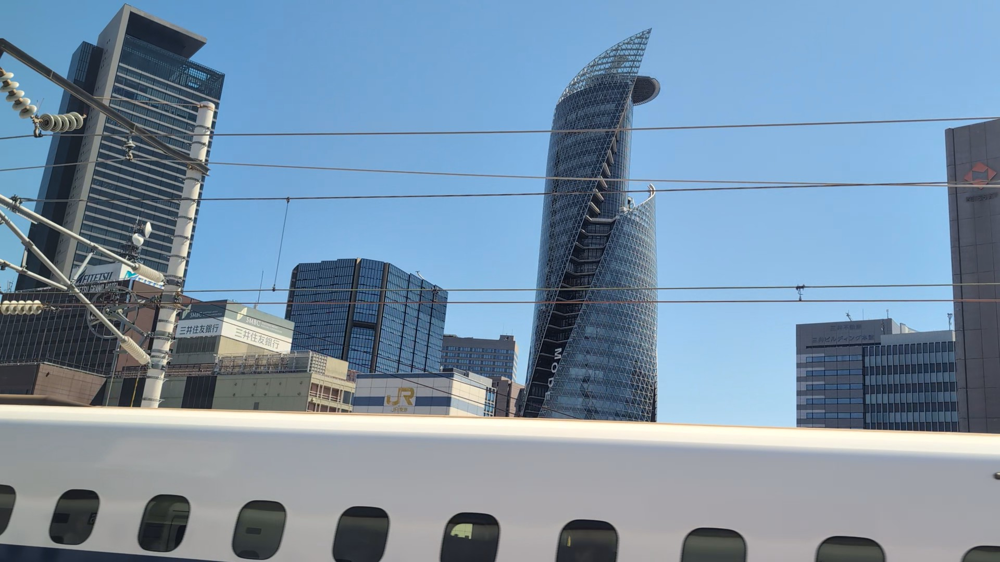
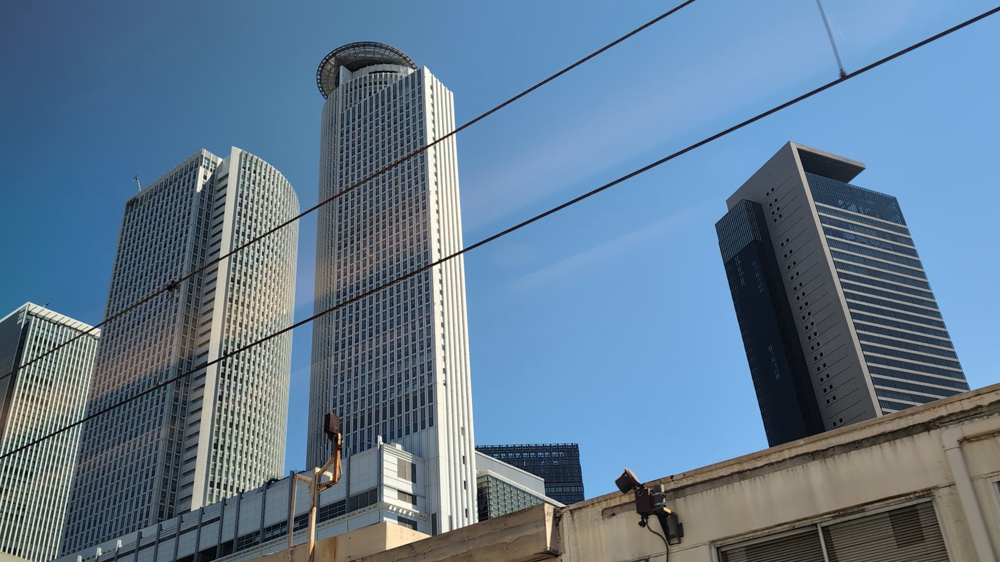
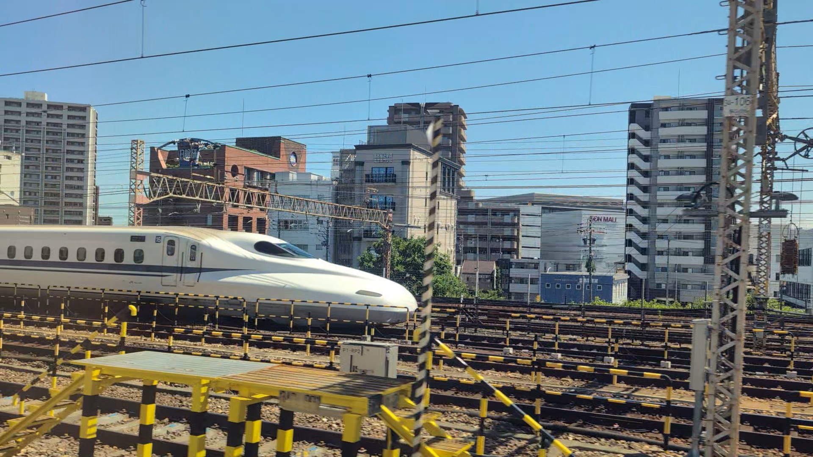

TOKAIDO SHINKANSEN WINDOW VIEW
名古屋駅前はいつ見える？座席側は？
高層ビルの谷を、新幹線で抜ける。

- 見える区間
- 名古屋到着直前
- 座席側
- 両側・名古屋直前
- タイミング
- 東京発のぞみ基準で約94分後
- 写真
- 3 枚
名古屋駅前の見つけ方
東京から新大阪へ向かう列車では、名古屋に着く少し前から車窓が一気に都市の景色へ切り替わります。高層ビル、駅前の密度、線路の重なり。自然や城とは違うけれど、名古屋到着を知らせる大事な車窓です。
東京から新大阪方面へ向かう場合は、名古屋到着直前が近づいたら両側・名古屋直前の窓を少し早めに見てください。新大阪から東京方面へ向かう場合は、通過順が逆になります。
東海道新幹線の車窓としてのポイント
名古屋駅前は、富士山だけではない東海道新幹線の車窓を楽しむための見どころです。列車の速度が速いため、見える時間は短く、天気や座席位置によって見え方が変わります。
写真で見る名古屋駅前

